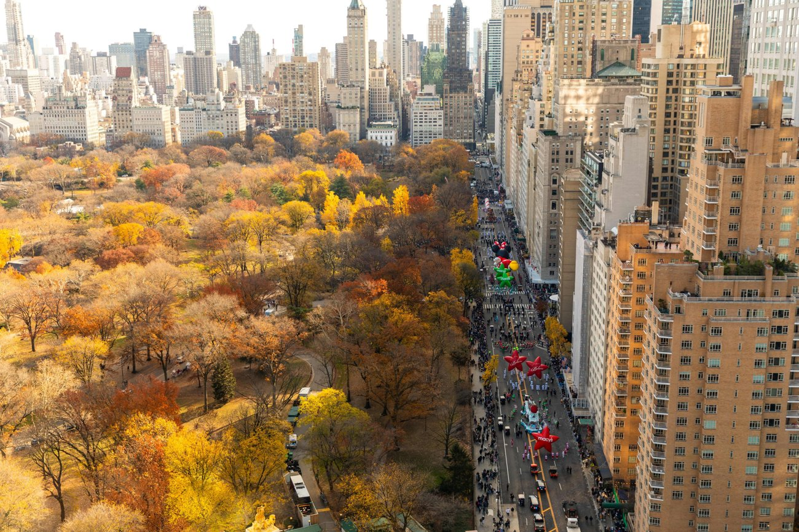

Arrive at ATL
Allow about 2½ hours before DL557 for holiday security, bags and baby logistics.
DAY 01 · TUESDAY · NOVEMBER 24
A morning flight, a park-side afternoon, and your first taste of the holidays.
← Back to the five-day plan
A REALISTIC RHYTHM
Allow about 2½ hours before DL557 for holiday security, bags and baby logistics.
Nonstop Airbus A321. All times Eastern; no time-zone change.
Prebook a vehicle with the correct child seat. Allow 45–90 minutes after pickup to Midtown in holiday traffic. Drop bags; rooms may not be ready until 3 p.m.
Start at the Pond and Gapstow Bridge; add a short playground stop if dry. Keep to paved paths and turn back whenever Rue needs warmth.
Hot chocolate, a grocery stop and an early meal at Jams or your hotel. If everyone has energy, add a short Fifth Avenue window walk.
Lunch $45, early dinner $80, breakfast/snacks $25: $150 family allowance including ordinary tax/tip. Jams is the food-focused choice; Whole Foods at Columbus Circle is useful for milk, fruit and breakfast supplies.
Stroller-friendly park route, carrier as backup. Aim for a stroller nap after lunch if check-in is late; request a crib in advance, not on arrival. Use the room for a supervised floor-play break once available.
LGA → Midtown: plan 45–90 minutes driving plus baggage time. Hotel → park: 10–20 minutes walking depending on hotel. Total local walking ~1–2 miles.
If wet or the flight is delayed, shorten the park to a single viewpoint and use the Shops at Columbus Circle for a warm indoor walk. Keep the named lunch and evening outing scaled to actual arrival.
Choose the hotel and parade category before committing to flights. Confirm transfer child-seat type, flight tracking and cancellation.
Day marker shows the main neighborhood, not a turn-by-turn walking route.
Google Flights · ATL–LGA · Nov 24–28 · two adults ↗ · Delta · infant travel ↗ · Central Park Conservancy · park guide ↗ · Jams · dining at 1 Hotel ↗